Design for
real life.
Brand, digital, social, and editorial work created during my graphic design internship at Cervera Real Estate.
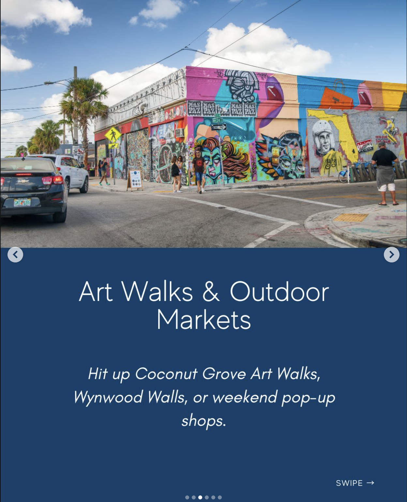
Cervera Real Estate
During my graphic design internship at Cervera Real Estate in Miami, I created marketing materials across digital and print, including property landing pages, social media campaigns, event communications, and editorial content. I worked across different formats while keeping the work visually cohesive and easy to navigate.
Property storytelling,
built for the screen.
I designed landing-page experiences for real estate projects with an emphasis on hierarchy, visual pacing, property imagery, and clear calls to action.

Content with a point of view.
Social media systems were adapted to different agents, audiences, and campaign goals while maintaining a polished real-estate voice.
Miami, translated
into a campaign.
I designed event-focused editorial pieces that brought together destination imagery, local recommendations, and Cervera’s established visual identity.
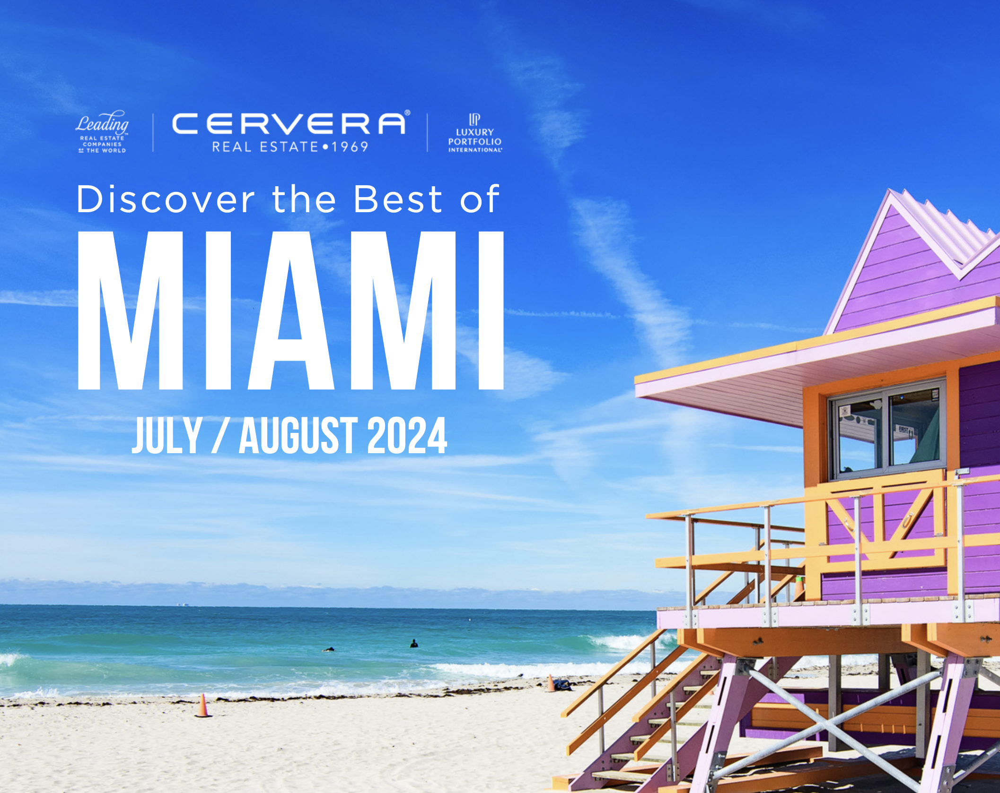
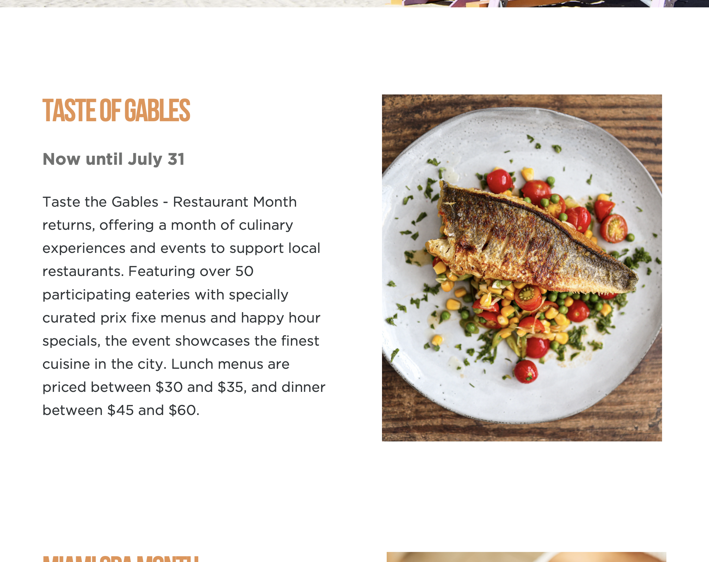
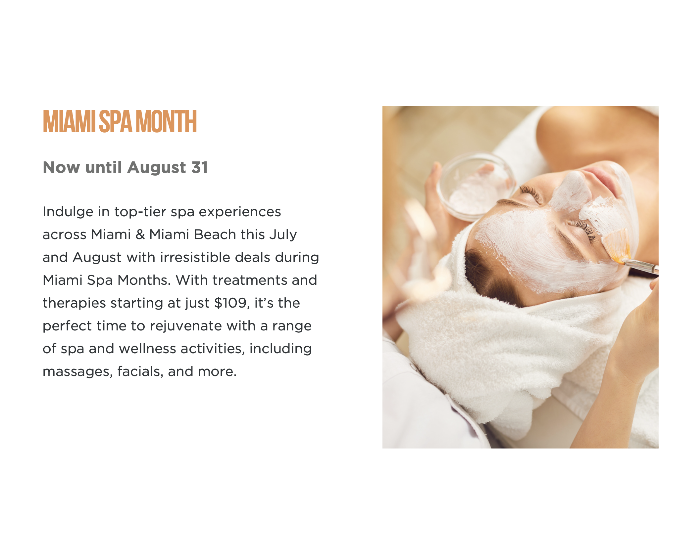
Different formats.
One visual voice.
The project taught me how to move between web, social, editorial, and marketing deliverables without losing the larger identity of the brand. The work had to be useful first — but it also had to feel considered.
→ Back to selected work
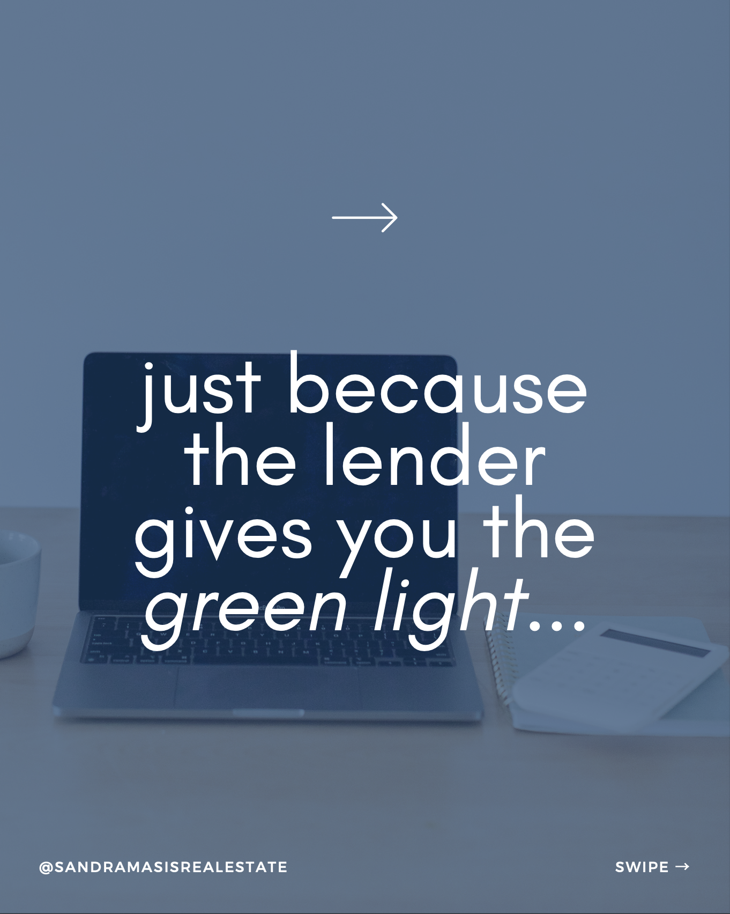
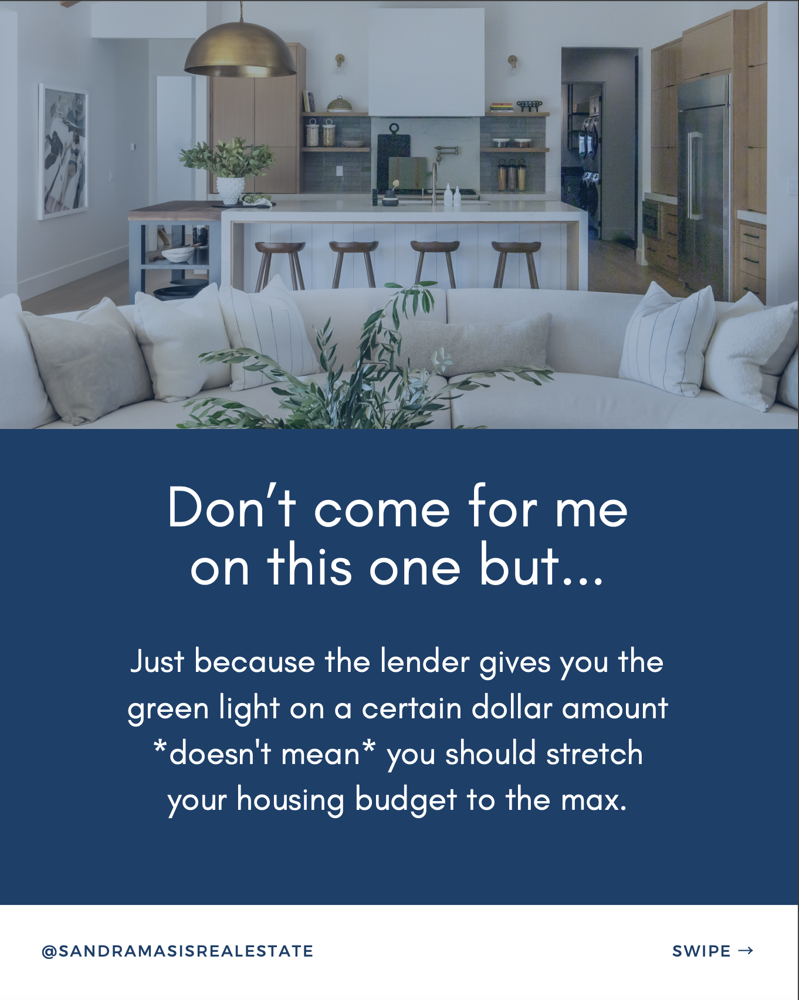
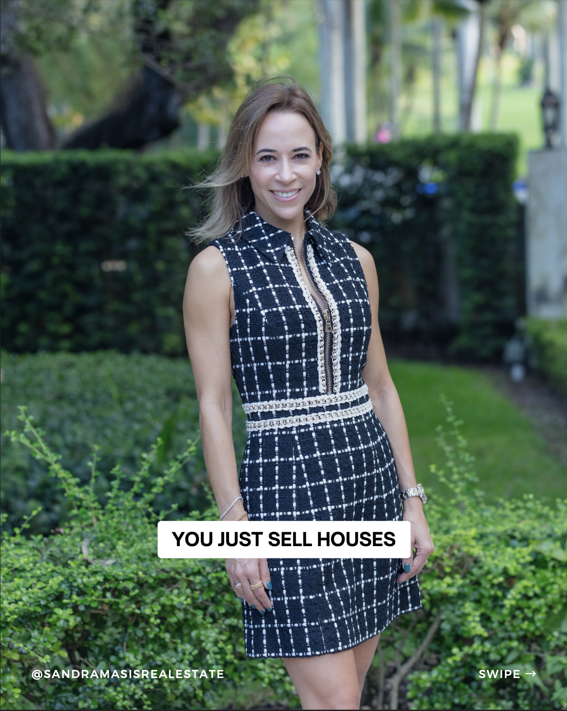
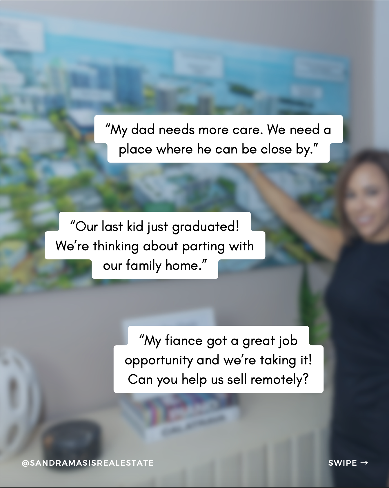
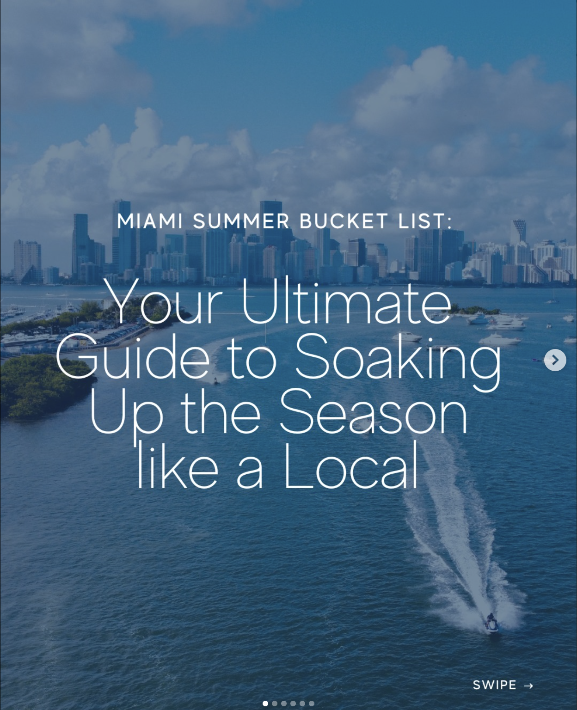
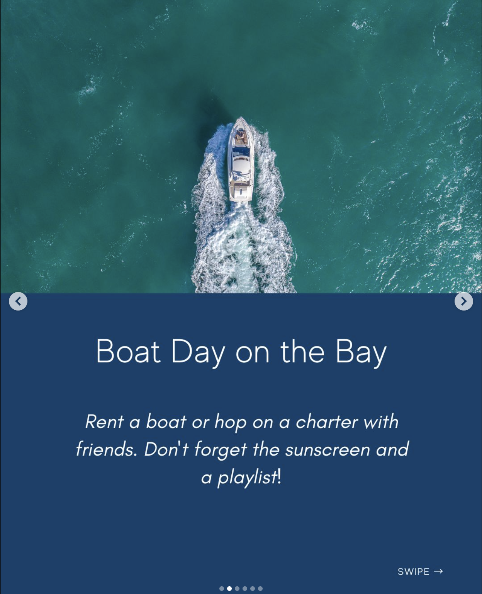
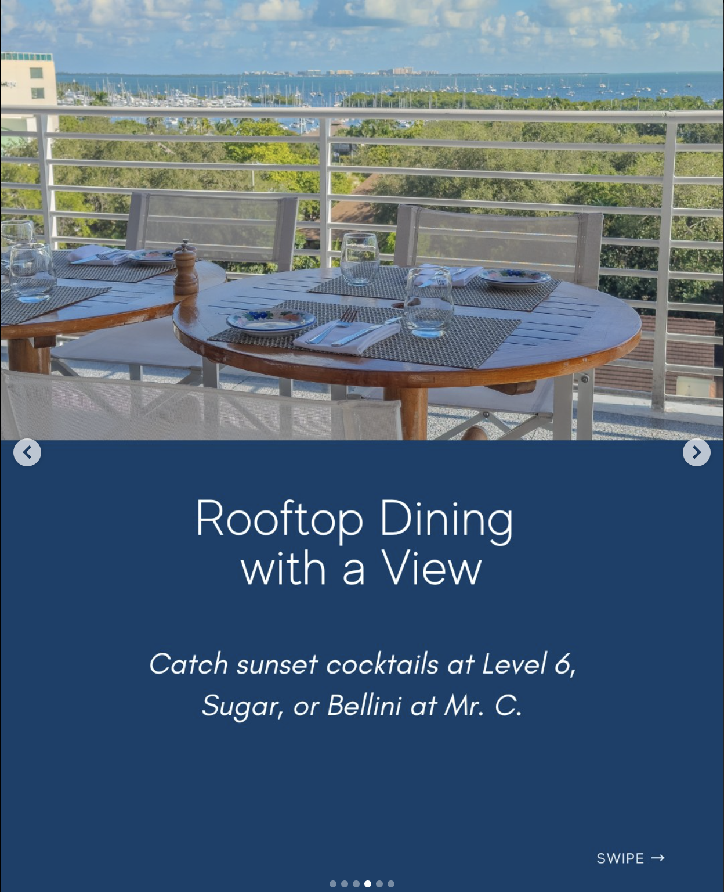